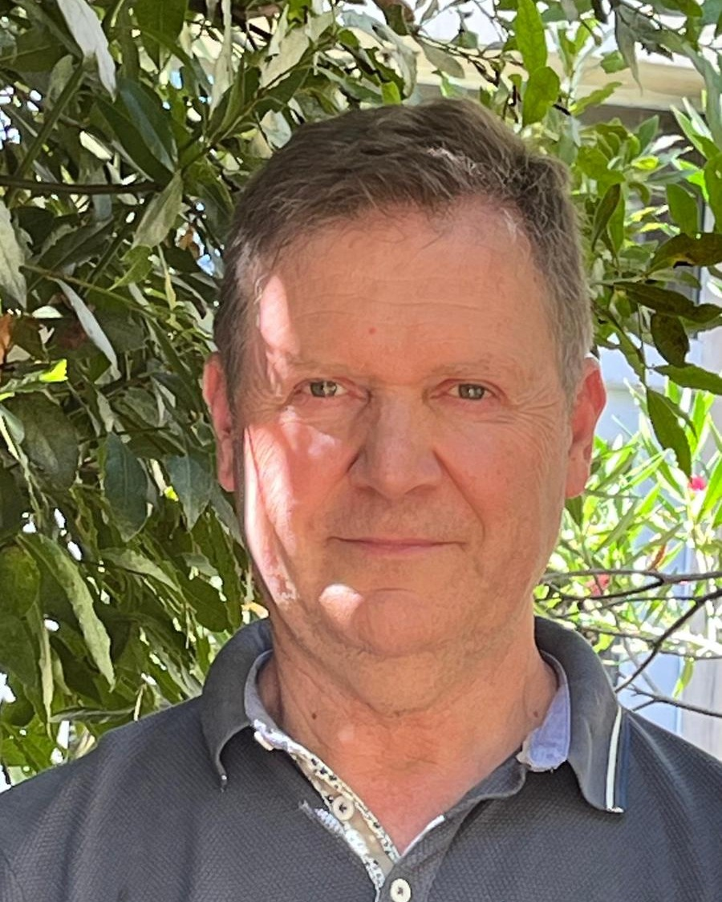

Psychanalyse — Orientation psychodynamique
Une approche d’orientation psychodynamique, pour parcourir votre histoire personnelle et vous découvrir comme sujet unique. Une séance de 45 minutes par semaine, le plus souvent.
En savoir plusCabinet · Corme-Écluse (17)
Une approche inclusive et dynamique, sur mesure pour chaque situation.

Accueillir dans un espace où chacun se sent en sécurité, reconnu et entendu — sans jugement.
Je suis psychanalyste et art-thérapeute. Je reçois au cabinet, à Corme-Écluse.
J’accompagne en psychanalyse, en thérapie psychodynamique et en médiation artistique. Mon approche est humaniste : elle repose sur des échanges et des interactions simples.
Le cabinet est au calme, avec un parking sur place, dans un cadre accueillant et bienveillant.
Dès mes premières confrontations avec les aléas de la vie, j’ai été poussé à explorer les mécanismes de la pensée humaine, les racines de nos difficultés comme de notre bonheur. Mon expérience de trente ans en tant que manager dans l’industrie m’a permis de constater les limites des techniques de persuasion et de coaching face aux réalités intimes et aux obstacles personnels de chacun.
Ma formation s’est déroulée à l’Institut Freudien de Psychanalyse à Pau, puis à Bordeaux, sous l’égide de l’Institut Freudien de Psychanalyse Nîmois. J’ai bénéficié d’un cursus complet, alliant théorie et pratique, complété par une analyse personnelle et didactique sur plusieurs années. Avec la soutenance d’un mémoire, cette démarche constitue une exigence réglementaire pour l’obtention du titre de « psychanalyste », me permettant ainsi de devenir membre de l’IFP*. Ma pratique est encadrée par un Code de Déontologie strict, garantissant un accompagnement respectueux et éthique de mes patients.
En tant que membre de la Fédération Freudienne de Psychanalyse, je poursuis mon engagement dans la formation continue, participant régulièrement à des séminaires et à des colloques multidisciplinaires. Bien que ma formation soit ancrée dans la pensée freudienne, elle s’enrichit également des apports de nombreux psychanalystes de renom tels que Mélanie Klein, D. Winnicott, W.R. Bion, A. Green, R. Roussillon, J.M. Lacan, D. Anzieux…
* IFP : Institut Freudien de Psychanalyse. ↩
J’accueille dans un espace où chacun se sent en sécurité, reconnu et entendu, sans jugement. J’adapte ma pratique aux besoins de chaque personne, en restant conscient de mes propres biais.
La séance est une rencontre interactive. Elle s’appuie sur des dialogues concrets et bienveillants.
Ma fédération impose une supervision par un psychanalyste didacticien au moins chaque trimestre, ainsi qu’une formation continue. Ce qui se dit en séance reste en séance.
Une approche d’orientation psychodynamique, pour parcourir votre histoire personnelle et vous découvrir comme sujet unique. Une séance de 45 minutes par semaine, le plus souvent.
En savoir plusUn espace pour rétablir le dialogue quand la communication est rompue. Je ne prends jamais parti, et je n’incite jamais à rester ni à se séparer.
En savoir plusDire autrement, par l’argile, le dessin ou le collage, ce qui résiste aux mots. Aucun prérequis technique : seules comptent l’intention et l’action.
En savoir plusUn accompagnement certifié, dans un espace protégé, avec l’accord de l’enfant et de ses responsables. Souvent articulé autour du jeu ou de la création plastique.
En savoir plusVous ne savez pas laquelle vous concerne ? Ce tri n’est pas à faire seul. Écrivez-moi, et nous le regardons ensemble.
Voir le détail de mes pratiques thérapeutiquesLa psychanalyse permet d’accéder à une existence plus harmonieuse.
Au début, le silence doit être utilisé avec parcimonie. J’interagis avec vous comme dans un échange classique.
Vous désirez me contacter, en savoir plus ou faire une demande de rendez-vous, c’est ici. Indiquez vos disponibilités, et je vous rappelle sous 48 heures.